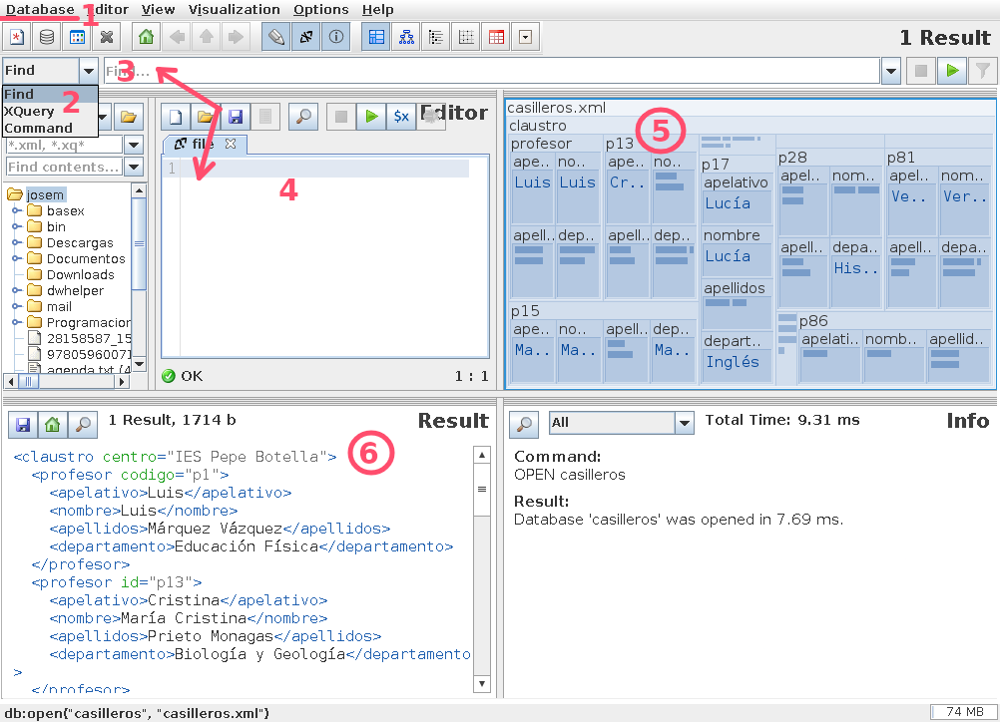

5.2. Bases nativas#
5.2.1. Bases documentales#
Las bases de datos documentales o, más exactamente, las bases de datos orientadas al documento son bases de datos no relacionales cuya característica principal es que se estructuran sobre la base de un documento, que no es más que un conjunto de datos semiestructurados. Un archivo XML o un archivo JSON o YAML son un documento.
Internamente pueden almacenar su información en distintos formatos, pero lo habitual es que lo hagan en XML (como BaseX), JSON (como CouchDB) o BSON (como MongoDB), que es una representación binaria del formato JSON.
5.2.2. BaseX#
BaseX es un motor de bases de datos XML desarrollado en Java que permite el
acceso y la modificación de datos a través de expresiones XQuery. Las bases de datos pueden crearse a través de un archivo origen XML
y, una vez creadas, el propio motor se encarga de la concurrencia. Es importante
entender que el archivo sirve para crear la base de datos y dotarla de
información, pero una vez creada, se almacena independiente al archivo original
(en Linux dentro de ~/basex/data) y, por tanto, está dotada de vida
propia al margen del archivo, esto es, si se altera, sus cambios no afectarán al
archivo; y viceversa.
Tiene varias versiones de ejecución:
Una cómoda versión GUI pensada para gestionar las bases de datos y hacer consultas desde la propia aplicación gráfica.
Una versión CLI que permite otro tanto, pero desde la terminal. Esta versión tiene la ventaja de permitir consultas (de lectura, no de manipulación) usando directamente el archivo XML sin necesidad de crear ninguna base de datos. Es, por tanto, ideal para comprobar la validez de expresiones XPath y XQuery.
Una aplicación dividida en cliente y servidor, cuyo servidor queda escuchando en un puerto y cuyo cliente permite hacerle consultas de modo semejante a la versión CLI.
Una aplicación que crea un servidor HTTP al que se le pueden hacer consultas a través de una API REST (véase la explicación de su uso en la wiki del proyecto). Lamentablemente, esta versión está ausente en el paquete de Debian.
Las dos últimas versiones, pues, permiten la consulta remota.
En realidad, con saber XQuery (incluida la extensión al lenguaje para la actualización de datos), tenemos prácticamente toda la lección aprendida y sólo nos falta conocer o las particularidades de la interfaz gráfica, si usamos la GUI, o las órdenes que permiten manipular las bases de datos (crear, borrar, abrir, cerrar, etc.) en caso de no hacerlo.
5.2.2.1. GUI#
Tiene el aspecto de la imagen:

donde hemos marcado las zonas más interesantes.
En 1 podemos manipular las bases de datos. Por ejemplo, para empezar a hacer consultas lo primero que necesitamos es abrir la base de datos correspondiente, y, si esta no existe, crearla a partir de un archivo XML.
2 permite interpretar el tipo de expresiones definidas al seleccionar un ítem de la lista 3:
Command es una orden propia de BaseX. Por ejemplo, si escribiéramos
CLOSEse cerraría la base de datos que está abierta. Y siHELP, obtendríamos un listado de todas las órdenes posibles.Find y XQuery permiten escribir expresiones XPath y XQuery, respectivamente para consultar la base de datos.
4 permite escribir, cargar y grabar expresiones de consulta más complejas que puedan ocuparnos varias líneas y que, por tanto, resulte engorrosas escribir en 2. Al pinchar sobre el icono del triángulo verde, la expresión se evaluará.
5 representa de forma gráfica los datos incluidos en la base de datos y, además, marcará en rojo los elementos extraídos en la consulta.
6 muestra el resultado de la consulta.
Ver también
Échele un vistazo a este vídeo de Cristian González si quiere revisar algo más ilustrativo que esta simple descripción.
5.2.2.2. CLI#
La aplicación CLI permite su uso interactivo:
$ basex
> HELP
[... La lista y explicación de todas las órdenes ...]
> CREATE DATABASE casilleros /ruta/a/casilleros.xml
> LIST
Name Resources Size Input Path
----------------------------------------------------------
casilleros 1 6989 /ruta/casilleros.xml
1 database(s).
> OPEN casilleros
> XQUERY //profesor[1]/nombre
<nombre>José</nombre>
> CLOSE
> QUIT
o pasar argumentos al ejecutable para no entrar en el modo interactivo. Este modo de ejecución permite la consulta directa del archivo XML sin ni siquiera haber creado la base de datos:
$ basex -i /ruta/a/casilleros.xml '//profesor[1]/nombre'
<nombre>José</nombre>
$ basex -i /ruta/a/casilleros.xml -c 'XQUERY //profesor[1]/nombre'
<nombre>José</nombre>
$ basex -i /ruta/a/casilleros.xml una_consulta_compleja.xq
Nota
La opción -c permite introducir las órdenes propias de BaseX
que también podemos usar de forma interactiva. Por ejemplo, -c
HELP nos devolvería un listado de todas las órdenes posibles que podemos
introducir en el cajetín 2 de la GUI.
Prudencia
Directamente sobre el archivo XML podremos hacer consultas, pero no podremos alterarlo usando las órdenes XQuery para la manipulación de los datos. Para ello, forzosamente, deberemos crear la base de datos.
5.2.2.3. Cliente/Servidor#
Primero hay que arrancar el servidor para que quede escuchando en el puerto 1984/TCP:
$ basexserver -S
BaseX 9.7.2 [Server]
Server was started (port: 1984).
$ ss -ltn
State Recv-Q Send-Q Local Address:Port Peer Address:Port Process
LISTEN 0 50 *:1984 *:*
Hecho, lo cual podremos usar el cliente de modo semejante a como usamos la versión CLI, aunque no podremos usar directamente un archivo y además tendremos que indicar un usuario y una contraseña con permisos de acceso. Al instalar la aplicación en el sistema, se debió pedir una contraseña que es la contraseña que tiene el usuario administrador (admin):
$ basexclient -Uadmin -Pcontraseña -i casilleros '//profesor[1]/nombre'
<nombre>José</nombre>
Por último, para parar el servidor:
$ basexserver stop
BaseX 9.7.2 [Server]
Server was stopped (port: 1984).
5.2.2.4. Servidor HTTP#
Por hacer
Escribir una breve reseña del servidor HTTP y la API REST de BaseX.
5.2.3. Ejercicios resueltos#
Dado el XML propuesto para representar el negocio de una cadena de restaurantes, indique cómo alterar el documento para realizar lo siguiente:
Sustituya la unidad «cc» por «ml».
Solución propuesta#(: También podría usarse un where para la condición :) for $unidad in //@unidad[. = "cc"] return replace node $unidad with attribute {fn:name($unidad)} {"ml"}
Cambie el nombre de «El tragón feliz» a «La cueva de Juanchu»
Solución propuesta#replace node //restaurante/@nombre[. = "El tragón feliz"] with attribute nombre {"La cueva de Juanchu"}
Añada a cada receta un atributo ingredientes cuyo valor sea el número de ingredientes que componen la receta.
Solución propuesta#for $receta in //receta return insert node attribute ingredientes {count($receta/ingrediente)} into $receta
Sume 5 a la cantidad de vinagre de todas las recetas.
Solución propuesta#(: También podría usarse un where para la condición :) for $vinagre in //ingrediente[@nombre = "vinagre"] return replace node $vinagre/@cantidad with attribute cantidad {$vinagre/@cantidad + 5}
Pase a mayúsculas los nombres de todos los municipios. En XPath 3 existe fn:upper-case():
Solución propuesta#for $texto in //municipio/text() return replace node $texto with text {fn:upper-case($texto)}
Elimine las medias raciones de la carta de todos los restaurantes (y si el plato sólo se servía en ese formato, elimine el plato).
Nota
La solución no es nada trivial, así que le proporcionaremos algunas pistas:
Los platos sin media ración se quedan iguales, los platos con sólo media deben eliminarse por completo y los platos que ofrecen también otros formatos deben modificar el valor de su atributo tipo para quitar la media ración. Puede hacerlo por separado (recuerde que puede hacer distintas acciones utilizando una secuencia) o echar mano de if.
La otra dificultad está en eliminar el formato media en los platos que se sirven en varios formatos. No tendrá más remedio que valerse de funciones de XPath 3. Hay al menos dos opciones: sustituir «media» por la cadena vacía o crear una secuencia separando las palabras, filtrar en esta secuencia «media» y, finalmente, volver a reconstruir la cadena.
Respecto al filtrado que se acaba de sugerir, XPath 3 permite aplicar predicados a cualquier secuencia y no exclusivamente a un conjunto de nodos. Por ejemplo, esto filtraría «c», por lo que el resultado sería un a secuencia con los otros tres ítems:
("a", "b", "c", "d")[. != "c"]
Solución propuesta#( for $plato in //plato where $plato/@tipo = "media" return delete node $plato, for $plato in //plato let $tipo := $plato/@tipo where contains($tipo, "media") return (: Separamos los componentes de la cadena, filtramos "media" y volvemos a unirlos :) replace node $tipo with attribute tipo {fn:string-join(fn:tokenize($tipo)[. != "media"], " ")} ) También podemos usar el :ref:`if de XPath <xpath2-const-if>` para evitar hacer dos estructuras |FLWOR|: .. code-block:: xquery for $plato in //plato let $tipo := $plato/@tipo where contains($tipo, "media") return if ($tipo = "media") then delete node $plato else replace node $tipo with attribute tipo {fn:string-join(fn:tokenize($tipo)[. != "media"], " ")}
5.2.4. Ejercicios propuestos#
Nota
Los ejercicios que se proponen en esta relación no dejan de ser ejercicios sobre XQuery más o menos sencillos, pensados para manipular las bases de datos cargadas en el gestor.
Tomando como referencia los documentos XML diseñados en los ejercicios sobre lenguajes de marcas, resuelva lo siguiente:
En el ejercicio sobre facturas:
Cámbiele el nombre a «Mariquilla de la O» por «María de la O».
replace value of node //cliente[nombre="Mariquilla de la O"]/nombre with "María de la O"
Añada al final de todos los clientes un elemento que sea
<solvente />.for $cliente in //cliente return insert node <solvente/> into $cliente
Elimine todos los elementos que acaba de añadir,
delete node //cliente/solvente
Cambie al cliente «c01» su identificar por «C01». Recuerde que debería también hacer el cambio de identificador en las facturas a su nombre.
for $attr in //@*[. = "c01"] return replace node $attr with attribute {fn:name($attr)} {"C01"}
Elimine los descuentos de todas las facturas.
delete node //factura/@descuento
Añada a la factura «f01» un descuento del 15%.
insert node attribute descuento {15} into //factura[@codigo="f01"]
Aumente en +5% el descuento a todas las facturas.
for $descuento in //factura/@descuento return replace node $descuento with attribute {name($descuento)} {$descuento + 5}
Elimine de todas las facturas las líneas de facturas por debajo de la segunda, es decir, todas las facturas deben quedar como mucho con dos líneas de factura (ítems).
delete node //factura/item[position() > 2]
Añada un atributo a cada factura llamado «items» que contenga la cantidad de líneas de factura que tiene.
for $factura in //factura return insert node attribute items {count($factura/item)} into $factura
Añada tres atributos a inventario llamados superreducido, reducido y normal cuyo valor sea la cantidad de productos que tienen ese tipo de IVA.
for $iva in ("normal", "reducido", "superreducido") return insert node attribute {$iva} {count(//inventario/producto[@iva=$iva])} into //inventario
En el ejercicio 8 sobre concesionarios y clientes:
Cambiar la marca del concesionario por «Dacia».
replace node /concesionario/@marca with attribute marca {"Dacia"}
Limite la velocidad máxima a 180.
for $vel in //velmax where $vel > 180 return replace value of node $vel with text {180}
Añadir un atributo con 10 Km a los coches de «km0».
for $coche in //coche where $coche/@tipo = "km0" return insert node attribute km {10} into $coche
Sustituir todos los identificadores de cliente, por su equivalente en mayúsculas (p.e. «c01» pasa a ser «C01»). Por ahora, olvide que esos identificadores también se usan como referencia en el atributo reservado y que, en consecuencia, también deberían cambiar.
for $cliente in //cliente let $id := $cliente/@id return replace node $id with attribute cliente {fn:upper-case($id)},
Repite el ejercicio anterior, pero sin olvidar los atributos reservado.
for $cliente in //cliente let $id := $cliente/@id return ( replace node $id with attribute cliente {fn:upper-case($id)}, for $reservado in //coche/@reservado[. = $id] return replace node $reservado with attribute reservado {fn:upper-case($reservado)} )
Añada un modelo «Mezcladito» que sea como el «Ibiza» pero con la cilindrada y la velocidad máxima del «León».
copy $mezcladito := //modelo[@nombre = "Ibiza"] modify ( replace value of node $mezcladito/@nombre with "Mezcladito", replace value of node $mezcladito/@id with text {fn:generate-id()}, replace value of node $mezcladito/cilindrada with text {//modelo[@nombre ="León"]/cilindrada}, replace value of node $mezcladito/velmax with text {//modelo[@nombre ="León"]/velmax} ) return insert node $mezcladito after //modelo[last()]
Convertir el número de plazas en un atributo del elemento modelo.
for $modelo in //modelo return ( insert node attribute plazas {$modelo/plazas} into $modelo, delete node $modelo/plazas )
Intercambiar el orden de DNI y nombre.
for $cliente in //cliente return (: Como es sencillo se podría recrear el elemento dni sin necesidad de copiarlo :) copy $dni_c := $cliente/dni modify () return ( delete node $cliente/dni, insert node $dni_c after $cliente/nombre )
Convertir el elemento
<cp>de la dirección en un atributo de<poblacion>.for $direccion in //direccion return ( insert node attribute cp {$direccion/cp} into $direccion/poblacion, delete node $direccion/cp )
Mover los coches reservados por un cliente al final del elemento cliente correspondiente y eliminar de ellos el atributo que identifica al comprador ya que no deja de ser necesario.
for $coche in //coche[@reservado][@reservado != "false"] return ( copy $coche_c := $coche modify delete node $coche_c/@reservado return insert node $coche_c into //cliente[@id = $coche/@reservado], delete node $coche )
Tomando el XML del ejercicio sobre facturas genere otro documento XML con las siguientes diferencias:
Divida el elemento
inventarioen tres grupos (elementosgrupo) en cada uno de los cuales deben encontrarse los productos con un mismo tipo de IVA (superreducido, reducido, normal). Para identificar el tipo de IVA incluya un atributo llamado IVA:<inventario> <grupo iva="superreducido"> <!-- Productos con IVA superreducido --> </grupo> <!-- Resto de grupos --> </inventario>
Como ya no es necesario el atributo iva en los elementos producto, elimínelo.
Añada las facturas de cada cliente, al final del elemento cliente correspondiente y elimine los elementos factura originales. Como no ya no será necesarios los atributos cliente de cada factura, elimínelos también.
xquery version "3.0"; (: Este copy se usa para que la solución no altere el documento de origen, sino una copia en memoria y se genere un documento XML nuevo. Así no es necesario que haya una base de datos. :) copy $facturacion := /facturacion modify ( (: Modificación del inventario :) for $tipo in ("superreducido", "reducido", "normal") let $productos := $facturacion//producto[@iva = $tipo] return ( (: No es posible asegurar el orden de las operaciones, por lo que no podemos asegurar que la eliminación de @iva en $productos se haga antes que su adición a grupo. Por eso hacemos la copia $p. :) insert node element grupo { attribute iva {$tipo}, (: No podemos copiar varios nodos, así que creamos uno que incluya todos los que queremos copiar :) copy $p := <p>{$productos}</p> modify (delete node $p//@iva) return $p/producto (: Estos productos no tiene el atributo iva :) } into $facturacion/inventario, delete node $productos ), (: Traslado de las facturas a cada cliente :) for $cliente in $facturacion//cliente let $facturas := $facturacion/factura[@cliente = $cliente/@id] return ( (: De nuevo, no es posible asegurar el orden de las operaciones, así que necesitamos copiar facturas :) insert node ( copy $f := <f>{$facturas}</f> modify (delete node $f//@cliente) return $f/factura ) into $cliente, delete node $facturas ) ) return $facturacion